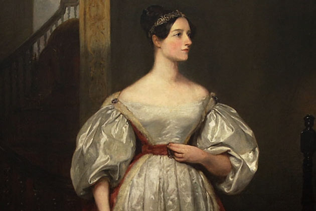

Ada Lovelace
La Grande Ordinatrice

1815 - 1852 (France culture)
Qui est Ada ?
Ada Lovelace de son nom complet Augusta Ada King, elle est contesse de Lovelace, son nom de naissance est Ada Bryon fille de Lord Bryon, elle est née le 10 Décembre 1815 à Londres et elle morte le 27 Novembre 1852 à Marylebone, est dans cette même ville elle considérer comme une pionnière scientifique.
Comment à t'elle marqué l'histoire ?
Elle est principalement connue pour avoir développé le premier véritable programme informatique, lors de son travail sur l'ancêtre de notre ordinateur actuelle, il s'agit de la machines analytique de Charles Babbage, elle est très connue dans les pays anglos-saxons et en Allemagne, notamment dans les millieus féministe, elle est moins connue en France mais de nombreux développeur(se) la connissent notament pour le language informatique Ada, qui a été nommé ainsi en son honneur.
Les différentes choses qu'elle à réaliser au cours de sa vie.
Son oeuvres principals est qui la fait connaitre et le développement du premier programme informatique. Mais elle a également était une professeuse à l'université de Cambridge dans les dommaines de l'informatique et des mathématique
Elle est également une mathématicienne de renom, une poètes ainsi qu'une écrivaine
Elle est également reconnue en tant que ingénieure et inventrice.
Plus d'Info ?
Pour plus d'information sur Ada Loverlace nous vous invitons à consulter ce lien Wikipédia